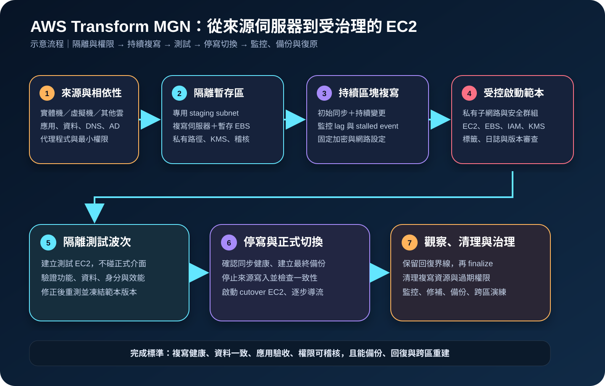

AWS Transform MGN：伺服器重新託管遷移基礎
AWS Transform MGN 原名 AWS Application Migration Service，透過來源端複寫、AWS 暫存區與可重複測試，把實體或虛擬伺服器重新託管到 Amazon EC2。服務降低資料搬移與切換工具的自建負擔，但應用相依性、網路、身分、資料一致性、測試、回復與遷移後治理仍由客戶負責。
作者：Dr. William｜查閱與發布：2026-11-20
服務定位
AWS Transform MGN 是伺服器重新託管工具。來源伺服器可位於資料中心、其他雲端、VMware 或其他虛擬化環境，也可以是實體主機。安裝 AWS Replication Agent 後，來源磁碟的區塊變更會持續送往目標 AWS 區域內的暫存區；MGN 再依 EC2 launch template 建立測試或切換執行個體。
重新託管的目標是先保留作業系統、已安裝軟體與主要磁碟內容，將伺服器搬到 EC2，再視需要進行現代化。它不是自動完成應用重構、資料庫轉換、程式碼修正或零停機保證的服務。若系統依賴固定 IP、硬體設備、共享儲存、低延遲網路、授權伺服器或未盤點的外部介面，仍需額外設計。
AWS Transform 的遷移工作流程可用 MGN 作為重新託管引擎，協助大規模盤點與波次執行；需要精細控制複寫設定、launch template、測試與切換時，也可直接使用 MGN 控制台。
核心概念與適用邊界
資料與執行流程
- 來源伺服器：待遷移的實體機或虛擬機。
- Replication Agent：從作業系統層讀取磁碟區塊變更並持續複寫。
- Staging area subnet：放置複寫伺服器與暫存 EBS 磁碟的專用子網路。
- Replication server：由 MGN 管理的 EC2 資源，接收來源資料並寫入暫存磁碟。
- Launch template：定義測試與切換 EC2 的執行個體、網路、儲存與安全設定。
- Test／cutover instance：分別用於正式切換前驗證，以及承接正式工作負載。
管理與風險邊界
- Migration wave：依相依性、風險與維護時段分批搬移。
- Continuous replication：初始同步後持續傳送變更，切換前仍須確認複寫健康與延遲。
- Crash consistency：複寫結果可達當機一致性；應用一致性仍需客戶停寫、沖刷或使用服務專屬程序。
- Post-launch actions：可在啟動後執行驗證或設定，但腳本與權限必須受控。
- Finalize cutover：會停止複寫並清除複寫資源，不應在回復條件未結束前過早執行。
- Rehost 不等於 DR：持續災難復原應另評估 AWS Elastic Disaster Recovery 與復原治理。
適合與不適合的使用情境
適合
- 需要把大量 Windows 或 Linux 伺服器先搬到 EC2，再分階段優化。
- 來源為 VMware、其他虛擬化平台、實體機或其他雲端，且可安裝複寫代理程式。
- 希望透過持續區塊複寫縮短最終資料同步時間，並可重複建立測試執行個體。
- 應用架構短期內不宜重寫，但有明確的 EC2、VPC、身分、監控與維運目標。
- 可依系統相依性建立遷移波次，安排停寫、驗證、DNS 或流量切換與回復窗口。
不適合或不能單獨完成
- 目標是直接將單體應用拆成容器、無伺服器或雲端原生資料服務。
- 來源作業系統、磁碟配置或硬體相依性不在支援範圍，且沒有替代路徑。
- 無法安裝代理程式，也不符合可用的無代理複寫條件；官方已停止對新部署提供 agentless replication。
- 要求應用層零資料遺失，卻沒有停寫、交易沖刷、資料庫原生複寫或一致性驗證。
- 只搬移主機，卻未盤點 DNS、憑證、Active Directory、共享檔案、排程、監控與外部整合。
- 把一次性遷移當成長期災難復原方案，未建立備份、跨區副本與定期復原演練。
示意故事案例：將訂單系統分波次搬到 EC2
以下為示意案例，不代表特定企業或正式部署。 一家零售公司有六台虛擬伺服器：兩台網站、兩台應用、兩台自管資料庫。團隊先用流量紀錄、連線清冊與業務訪談確認網站依賴應用層、應用層依賴資料庫、AD、DNS 與外部付款介面，因此沒有把六台主機拆成互不相關的單機任務。
目標帳號先建立專用 staging subnet、VPC endpoint、受限安全群組、CloudTrail、CloudWatch 與 KMS 金鑰。人員透過聯合身分、MFA 與短期工作階段操作；安裝代理程式所需權限限縮到遷移範圍，安裝完成後撤銷。來源資料經加密傳輸到暫存 EBS，測試與切換執行個體則依 launch template 進入私有應用子網路。
團隊先移轉網站與應用測試波次，驗證 TLS、DNS、SSM 管理、日誌、效能與外部介面；資料庫波次在切換窗口停止寫入、完成最後同步並執行應用一致性檢查。新環境通過訂單建立、付款回呼與報表驗證後才切換流量。回復觀察期結束前不 finalize cutover；完成後才停止複寫、清理暫存資源，並把 EC2 納入 AWS Backup 與跨區復原演練。

建置與運作流程
- 建立應用、主機、磁碟、網路、身分、DNS、憑證、排程、共享儲存與外部介面的相依性清冊。
- 確認來源作業系統、磁碟大小、網路與目標 AWS 區域受 MGN 支援，並記錄配額與波次規模。
- 定義 RTO、RPO、可接受停機、資料一致性方法、切換核准人與回復截止點。
- 建立遷移專用帳號或明確隔離範圍，啟用 Organizations／SCP、CloudTrail 與安全監控。
- 建立專用 staging area subnet；決定私有複寫路徑、NAT 或必要 VPC endpoint，限制路由與安全群組。
- 在每個目標區域初始化 MGN，檢查自動建立的服務角色與受管政策，分離管理、操作與唯讀權限。
- 設定 replication template，包括暫存子網路、路由、節流、EBS 類型、加密與資源標籤。
- 以核准流程安裝 Replication Agent；完成後撤銷不再需要的安裝權限並確認來源端服務狀態。
- 等待初始同步完成，監控 replication health、lag、stalled event、網路吞吐與暫存容量。
- 逐台檢查 EC2 launch template：執行個體類型、私有子網路、安全群組、IAM role、EBS、KMS、標籤與 deletion behavior。
- 以最小權限建立測試執行個體；避免連到正式排程、寄信、付款、批次或其他會產生副作用的介面。
- 執行作業系統、應用、資料、網路、身分、效能、監控、備份、弱點與法遵驗證。
- 修正後重複測試；把通過條件、失敗證據與 launch template 版本固定到遷移波次。
- 切換前確認 replication state 健康且無不可接受延遲，建立最終備份並通知相關責任人。
- 停止或凍結來源端寫入，完成應用一致性程序，再啟動 cutover instance。
- 驗證資料時間點、服務健康、DNS／負載平衡、憑證、外部整合與監控後，才逐步導入流量。
- 在回復觀察期內保留來源端與必要複寫能力；任何重大錯誤依既定條件回復。
- 觀察期通過後 finalize cutover、斷開來源、封存紀錄並清理 replication server、暫存 EBS、測試執行個體與過期權限。
- 將新 EC2 納入 Patch Manager、Inspector、CloudWatch、Config、AWS Backup、成本標籤與跨區復原演練。
成本、可用性與維運考量
MGN 對每台來源伺服器提供有限期間的免費使用時數；官方快速入門目前說明為 2,160 小時，也就是連續使用約 90 天。即使仍在服務免費期間，複寫伺服器、暫存 EBS、快照、資料傳輸、NAT Gateway、VPC endpoint、測試與切換 EC2、CloudWatch、KMS 及備份仍可能計費。測試執行個體若未終止，也會持續產生成本。
暫存磁碟類型會影響成本與同步速度。來源磁碟變更率高或切換期限緊迫時，較高效能的 EBS 可能縮短同步；低變更率工作負載可評估較低成本選項。大量波次同時複寫時，還要評估網路頻寬、複寫伺服器比例、EBS 配額、API 配額、NAT 流量及測試環境並行成本。
MGN 降低搬移工具的建置負擔，不會自動替目標工作負載建立 Multi-AZ 或跨區高可用。重新託管後的 EC2 若仍是單一執行個體、單一可用區與單一資料庫，原有單點故障只會被搬到雲端。可用性設計應在遷移前決定最低目標，並在遷移後逐步導入負載平衡、Auto Scaling、Multi-AZ 資料服務、備份與跨區復原。
AWS Transform MGN 特有資安風險與控制
- 初始化權限過大：官方主控台初始化流程需要高權限；應在受控時段由專責角色執行，記錄 CloudTrail，完成後回收日常不需要的管理權限。
- 安裝用權限殘留：代理程式安裝完成後撤銷或刪除安裝專用權限，不把長期存取方式留在來源伺服器。
- 來源代理程式具磁碟讀取能力：限制可安裝的人員、套件來源與主機範圍，監控代理程式狀態，遷移完成後確認卸載。
- 複寫伺服器暴露：使用專用 staging subnet、安全群組與私有路徑；只開放必要來源與連接埠，不允許任意入站管理。
- 公開 IP 與網際網路路徑：能透過 VPN、Direct Connect、VPC peering 或 endpoint 完成時優先使用私有連線；確需公開路徑時限制來源並持續監控。
- 暫存資料未妥善加密：所有暫存與目標 EBS 啟用加密；使用客戶管理 KMS 金鑰時，縮限 key policy 與 grant，驗證服務角色可用後再開始複寫。
- KMS 設定變更觸發重複同步：官方說明複寫開始後反轉加密選項會重新開始複寫；應在波次前固定金鑰與授權，避免切換窗口失準。
- launch template 漂移：把執行個體、IAM role、網卡、安全群組、EBS、KMS、標籤與 user data 納入版本化審查；每次測試前比對。
- 測試環境誤連正式系統：測試波次使用隔離子網路、測試 DNS 與受控出口，封鎖正式付款、郵件、批次與資料寫入介面。
- 測試資料外洩：對敏感資料採遮罩或限制存取；測試執行個體、快照與 EBS 仍依正式資料等級保護。
- 機密進入腳本或日誌：機密存於 Secrets Manager；一般設定可用 Parameter Store。來源動作腳本不應嵌入敏感值，輸出也不得暴露機密。
- 自訂來源動作被濫用：限制可寫入指定 Parameter Store 前綴的人員，雙人審查腳本，保持可重複執行，並以 CloudTrail 稽核 SSM 操作。
- 切換時資料分岔：切換前停止來源寫入、確認複寫健康與延遲、執行資料庫或應用一致性程序，避免新舊環境同時接受交易。
- Active Directory 與 DNS 失聯：正式啟動前驗證目標 VPC 到網域控制站的連線與 DNS 解析；MGN 轉換會讓目標使用 DHCP，來源主機的個別 DNS 覆寫不會自動保留。
- CloudTrail 覆蓋不足：集中記錄 MGN、EC2、IAM、KMS、SSM、EBS、VPC 與 cutover 操作，建立異常角色承擔與高風險變更告警。
- CloudWatch 只看主機存活：同時監控 replication lag、stalled event、應用交易、錯誤率、延遲、資源容量與外部介面。
- 過早 finalize cutover：finalize 會停止複寫並清除複寫資料；必須先完成業務驗證與回復觀察期，再由核准人執行。
- 遷移後沒有備份：切換完成即納入 AWS Backup 或服務原生備份，建立跨帳號／跨區副本、保留鎖定與定期還原測試。
共同責任邊界
AWS 負責 MGN 受管控制面、服務軟體與其底層雲端基礎設施，管理服務建立的複寫與轉換元件，並加密 MGN 控制面傳輸。官方文件說明 MGN 儲存的是設定與日誌資料，複寫資料保留在客戶自己的 VPC；資料傳輸會加密。
客戶負責來源伺服器與代理程式安裝授權、IAM 最小權限、MFA 與短期工作階段、staging subnet、路由與公開存取、launch template、EC2 作業系統與應用修補、KMS、Secrets Manager／Parameter Store、CloudTrail／CloudWatch、資料一致性、切換與回復、備份、跨區復原、授權與法遵。MGN 能建立 EC2 不代表應用已通過功能、安全、效能或業務驗收。
上線與維運可執行檢查清單
- □ 來源主機、應用、資料、DNS、AD、憑證、共享儲存與外部介面清冊完整。
- □ 來源作業系統、磁碟、區域、網路與配額符合 MGN 支援條件。
- □ RTO、RPO、停機窗口、資料一致性、切換與回復條件已核准。
- □ 遷移波次依相依性排序，未把同一交易鏈拆成無關主機。
- □ 操作人員使用聯合身分、MFA 與短期工作階段。
- □ 初始化、管理、執行切換與唯讀角色已分離；日常權限符合最小權限。
- □ 代理程式安裝權限在完成後已撤銷，來源端未留下不必要的長期授權。
- □ staging area 使用專用子網路、安全群組與受控路由。
- □ 公開 IP 與網際網路路徑已有明確必要性；可行時改用私有連線或 VPC endpoint。
- □ 暫存與目標 EBS 已加密，KMS key policy、grant 與跨帳號需求完成實測。
- □ 未把任何敏感值寫入腳本、user data、標籤、URL、日誌或匯出檔。
- □ Secrets Manager／Parameter Store 的存取、加密與輪替責任已定義。
- □ CloudTrail 已集中記錄 MGN、IAM、EC2、EBS、KMS、SSM 與網路變更。
- □ CloudWatch／EventBridge 已監控複寫停滯、延遲、啟動工作與應用健康。
- □ 每台來源伺服器的 launch template 已檢查網路、IAM、EBS、KMS、標籤與刪除行為。
- □ 測試執行個體與正式外部介面隔離，不會誤送信、扣款或執行正式批次。
- □ 測試涵蓋功能、資料、身分、DNS、憑證、效能、安全、監控與備份。
- □ 切換前 replication state 健康、延遲可接受，且已建立最終備份。
- □ 切換期間可停止來源寫入，並有應用或資料庫一致性程序。
- □ 回復觀察期與 finalize cutover 核准人已明確定義。
- □ 測試 EC2、暫存 EBS、複寫資源、過期快照與權限有清理清單。
- □ 遷移後 EC2 已納入修補、弱點管理、Config、監控、成本與標籤治理。
- □ AWS Backup 或原生備份已建立跨帳號／跨區副本並完成還原測試。
- □ 長期災難復原方案已與一次性 MGN 遷移流程分開設計與演練。
AWS 官方一手來源
- AWS Application Migration Service is now AWS Transform MGN（查閱：2026-11-20）
- What is AWS Transform MGN?（查閱：2026-11-20）
- AWS Transform MGN General Questions（查閱：2026-11-20）
- Quick start guide for AWS Transform MGN（查閱：2026-11-20）
- Network requirements for MGN（查閱：2026-11-20）
- Replication template reference（查閱：2026-11-20）
- AWS Transform MGN Replication Questions（查閱：2026-11-20）
- Initializing MGN with the console（查閱：2026-11-20）
- Infrastructure security in AWS Transform MGN（查閱：2026-11-20）
- Amazon EBS configuration for AWS Transform MGN（查閱：2026-11-20）
- Full launch template setting review（查閱：2026-11-20）
- Monitor the server in the migration lifecycle（查閱：2026-11-20）
- Source actions overview and security prerequisites（查閱：2026-11-20）
- AWS Transform MGN release notes（查閱：2026-11-20）
- AWS Transform MGN Pricing（查閱：2026-11-20）
- AWS Shared Responsibility Model（查閱：2026-11-20）
內容說明
本文依 2026-11-20 可查閱的 AWS 官方文件整理。MGN 的支援作業系統、區域、網路需求、配額、複寫方法與功能會更新；正式遷移前應以目標區域的最新文件、實際來源清冊、複寫健康狀態與測試結果為準。